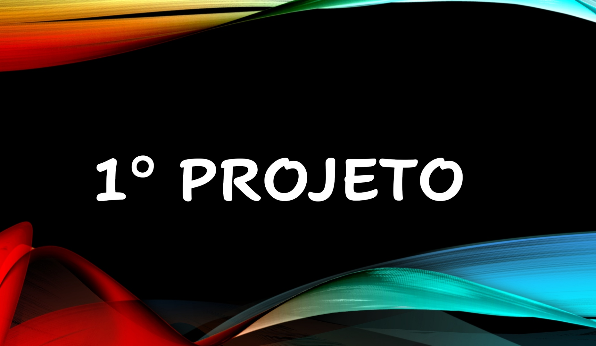
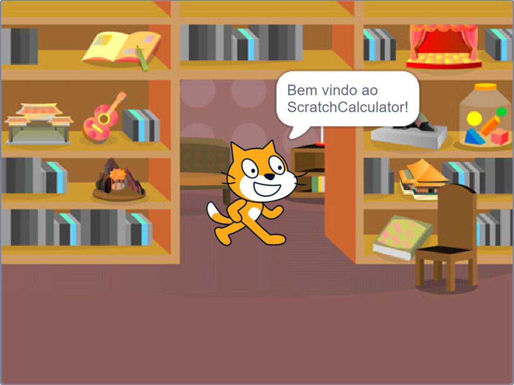
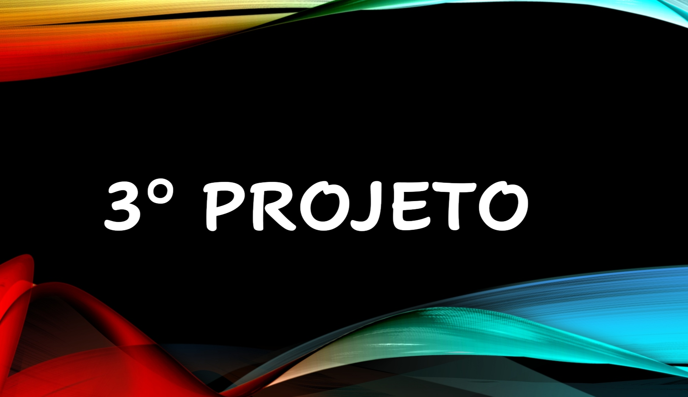
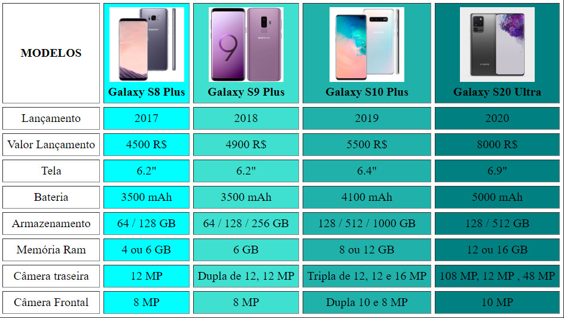
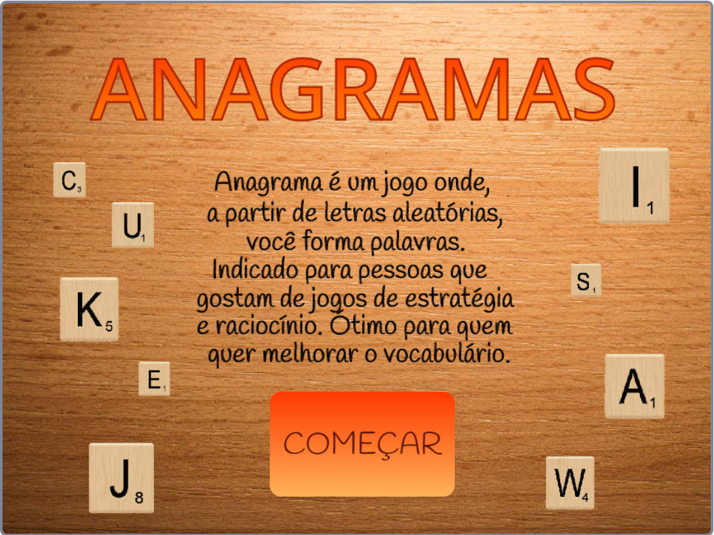

Olá! meu nome é Mateus, nasci em Paulista-PE, tenho 18 anos e sou estudante de Análise e Desenvolvimento de Sistemas na faculdade Senac Recife.
Portfólio

Meu primeiro projeto na faculdade, foi feito com o objetivo de criar um diálogo sobre o covid-19.

Esse projeto é uma calculadora feita no scratch.

Jogo de labarinto recreativo, feito no scratch.

Pagina WEB com uma tabela comparativa, que mostra a evolução dos celulares top de linha da Samsung nos ultimos anos.

Projeto voltado para idosos, feito em equipe em uma atividade da faculdade.